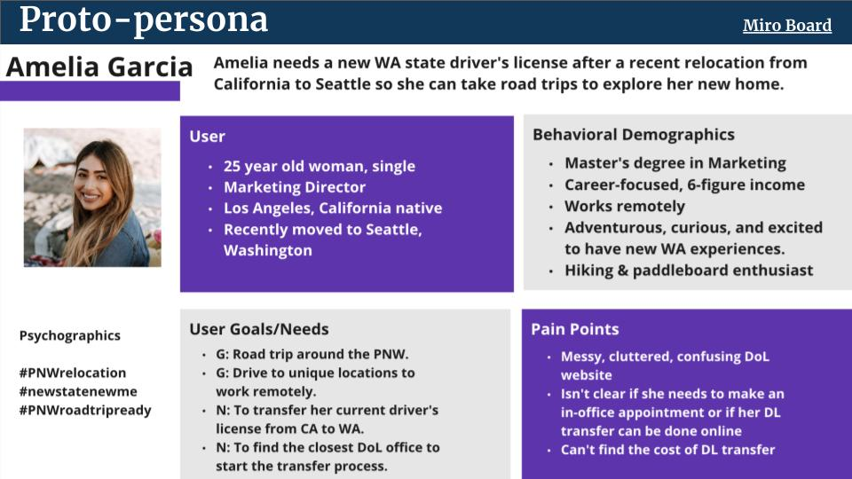

The Project

This project was a 4-week redesign of government website. My group of three started with research, assessed the usability of the current site, then started prototyping our redesign. We also spoke with the current webmaster to learn about the unique challenges their site faces.
The Research
We interviewed users form a wide range of demographics, including both younger and older users, first-time drivers, and more experienced drivers, in order to ensure that our page was approachable for anyone who might need it..
The Problem

The problem with the current page was a primarily the business and dated look of the home page. Users were quickly overwhelmed and unsure on how to proceed. All the content was there, so we wanted to help users find a way to navigate this valuable information without having to call or go wait in line at the office.
The Iterations

I testeed my wire frames and prototypes regularly to ensure that I stayed true to the users needs. User feedback was positive, and highlighted ares to simplify further.
The Prototype

I created wire frames and prototypes with testing along the way.